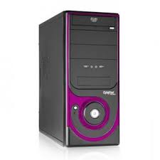
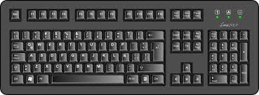
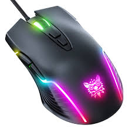

QUE ES EL HARDWARE?
El hardware es la parte fisica de una computadora o dispositivo electronico,esto quiere decir que todo lo que puedes ver o tocar: piezas,cables,circuitos,pantallas,teclado,electronico,Esel conjunto que trabajan junto con el software (programas)para que el equipo funcione en otras palabras el hardware es el cuerpo de todo dispositivo informatico.
CUALES SON SUS COMPONENTES?
Los componentes del hardware se clasifican por dos partes que son:
Hardware(interno) aqui se encuentran:
- PLACA BASE:conecta todo los componentes.
- CPU:procesa y ejecuta instrucciones. 
- MEMORIA RAM: guarda datos temporales mientras trabajas.
- DISCO DURO O SSD: Almacena datos de forma permanente.
- FUENTE DE ALIMENTACION: suministra energia.
- TARJETA GRAFICA:procesa imagenes y videos.
- TARJETA DE SONIDO: maneja el audio.


Y en el Hardware (externo)
- MONITOR:Muestra la informacion
- TECLADO:Introduce texto y comandos 
- MOUSE:Controla el cursor 
- ALTAVOCES/AURICULARES:Reproducen el sonido
- MICROFONO:Capta audio